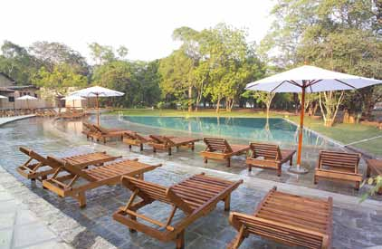

VIGTIG VIDEN OM REJSEN
DER ER TÆNKT PÅ DET HELE
Er du træt af at skulle tilrettelægge det hele selv? Det kan for de fleste familier være rigtigt svært at vælge, hvor lang tid man skal bruge et sted i forhold til et andet - og hvilken strand og by egner sig nu bedst til vores familie. Derfor nyder du godt af vores ekspertise i at rejse med børn og de destinationer, hvor vi sender jeres familie til. Det er jeres ga- ranti for, at I får en god rejse uden bekymringer for om hotelbookingnen nu gik igennem, og om det hotel, I har booket, nu også er så godt, som I forventer. Vi giver jer tryghed på rejsen, for vi har tilrettelagt det hele for jer. Det program, som vi har på vores hjemmeside, er vores bedste bud på en familierejse. Men ikke allle familier er ens, derfor er der plads til, at vi skræddersyer rejsen, så den passer præcis til jeres ønsker og budget. Det kan ikke være nemmere. Det er bare om, at komme afsted.

FLY PÅ REJSEN
Rejserne tilrettelægges specielt til jeres familie, I bestemmer derfor, hvornår det passer jer at rejse. Der- for er der ikke som udgangspunkt fly med i prisen, idet fly kan variere i pris afhængigt af afrejsetidspunk- tet. Kontakt os for at få den bedste pris på fly til og fra destinationen. Når vi vælger fly til jer tager vi højde for, at I rejser med børn.
HOTELLER
På vores familierejser er hotellerne nøje udvalgt, så de matcher de fleste familiers ønske om komfort. Hotellerne ligger centralt og har swimmingpool, som de yngste i familien ofte sætter pris på. I kan altid vælge en anden hotelkategori, end den vi har valgt, ligesom I kan ændre i programmet, så det passer til jeres familie.

BOOK ET MØDE
Det er vigtigt for os, at I er trygge ved at rejse, og at jeres forventninger til rejsen afstemmes inden afrejse. Derfor byder vi gerne på en kop kaffe eller te, så vi kan høre om, hvad det er, jeres familie ønsker.Tag gerne børnene med, så begynder rejsen allerede, og hele familien kan glæde sig sammen om den kommende drøm- merejser.